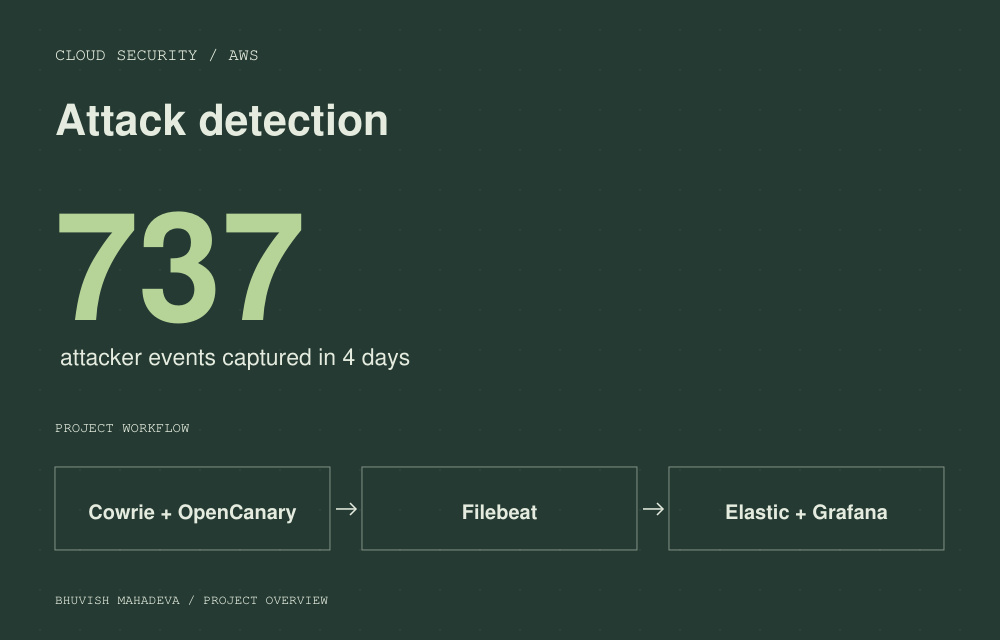

CLOUD SECURITY 01
Honeypot & SIEM on AWS
Built an attack-detection pipeline with Cowrie and OpenCanary, shipping logs through Filebeat to Elasticsearch and visualizing activity in Grafana. Mapped findings to MITRE ATT&CK.
737 real-world attacker events in 4 days